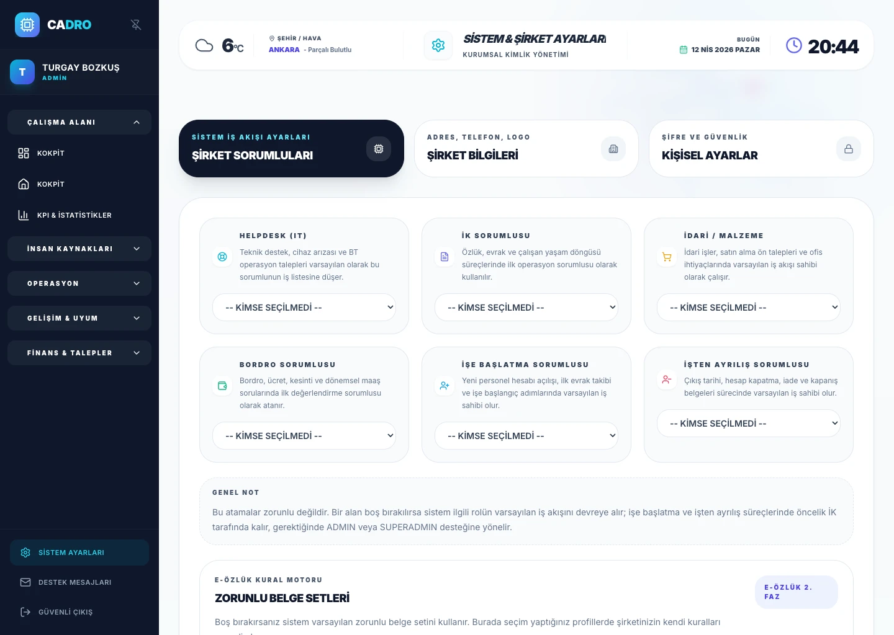

Rol Bazli Erisim
Her kullanici yalnizca görev alanina uygun modüllere ve verilere erisir.

GÜVENLIK VE ERISIM YÖNETISIMI
CADRO, rol bazli erisim, parola ve oturum güvenligi, denetim izi ve yönetsel kontrol katmanlariyla güvenligi ürünün dogal parcasi haline getirir.

Erisim ve kimlik yönetimi görünür degilse güvenlik politikalari operasyonel olarak zayiflar.
employee datane erisen her rolün net sinirlarla yönetilmesi hem güven hem uyumluluk icin kritiktir.
Rol bazli erisim, oturum güvenligi ve denetim iziyle güvenlik günlük operasyonun parcasi haline gelir.
SECURITY LAYER
Her kullanici yalnizca görev alanina uygun modüllere ve verilere erisir.
Kullanici güvenlik tercihleri ve hesap koruma katmanlari merkezi yapida yönetilir.
Kritik islemler kayit altina alinir, yönetsel inceleme icin görünür hale gelir.
ADMIN CONTROLS
Kurumsal ayarlar, sirket bilgileri ve erisim sürecleri tek merkezde toparlanarak güvenlik yaklasimina daha düzenli bir operasyonel zemin kazandirir.
Explore compliance structure →FAQ
Evet. Roller ve yetki seviyeleri sayesinde kullanicilar yalnizca görmeleri gereken modül ve kayitlarla sinirlandirilabilir.
Evet. Güvenlik ve yönetsel görünürlük icin kritik islemler kayit altina alinir ve gerektiginde incelenebilir.
READY TO START?